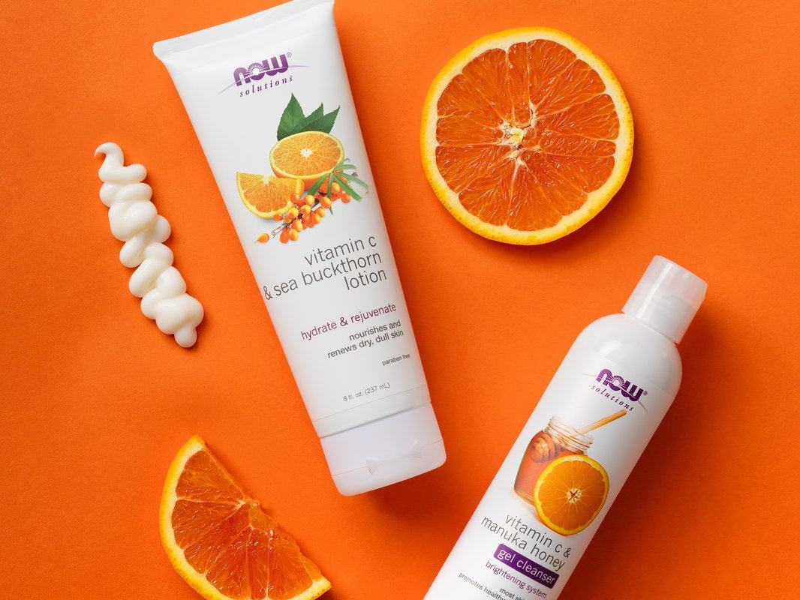
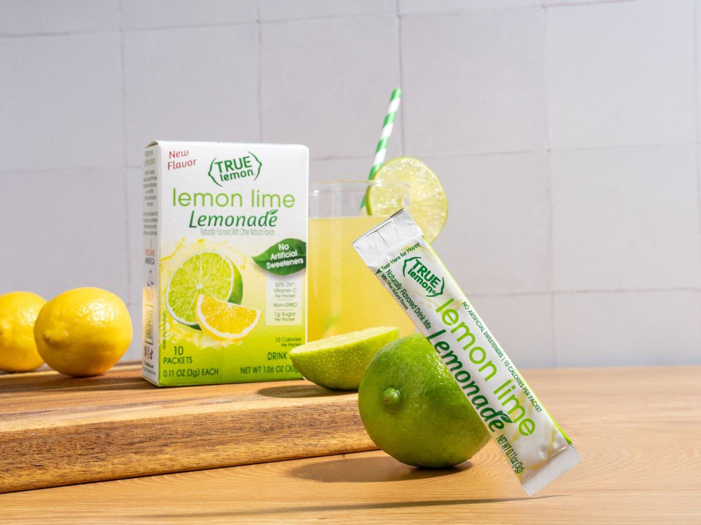

Product design + AI
Ideas, shipped.
I'm Tim Imbordino, a creative leader with 18+ years in CPG brand storytelling. These are products I designed, built and launched myself, using AI as my engineering partner so the design thinking never waits on code.


Case study 01 · Consumer app
Muscle Memory
A strength training app, plus a gym platform that turns any facility's equipment into personalized workouts.
View case study →
Case study 02 · Creative tooling
BannerFactory
One upload in, a full set of on-brand display banners out. Design system rules, encoded as software.
View case study →
Case study 03 · Brand design system
NOW Amazon Creative Guide
A design system for Amazon banners, listing images and A+ content, rebuilt as an interactive guide.
View case study →CPG brand work
Photography, video and creative direction for CPG brands.
Photography, video, and creative direction that bring a brand's story to life with authenticity and impact. Tap a project to see more.

NOW · Campaign photography
Be You NOW
A campaign with trusted female voices in health and wellness.
View project →
NOW Solutions · Photography + video
NOW Solutions
Personal care and essential oils, for e-commerce, print and social.
View project →
True Citrus · Product + lifestyle photography
True Citrus
Product clarity and real-life moments for a bright brand.
View project →
Nuzest · UGC-style photography
Nuzest
A plant-based protein launch, shot in real-life settings.
View project →
N2 Water · Photography + social video
N2 Water
Lifestyle energy and science-backed hydration for active consumers.
View project →